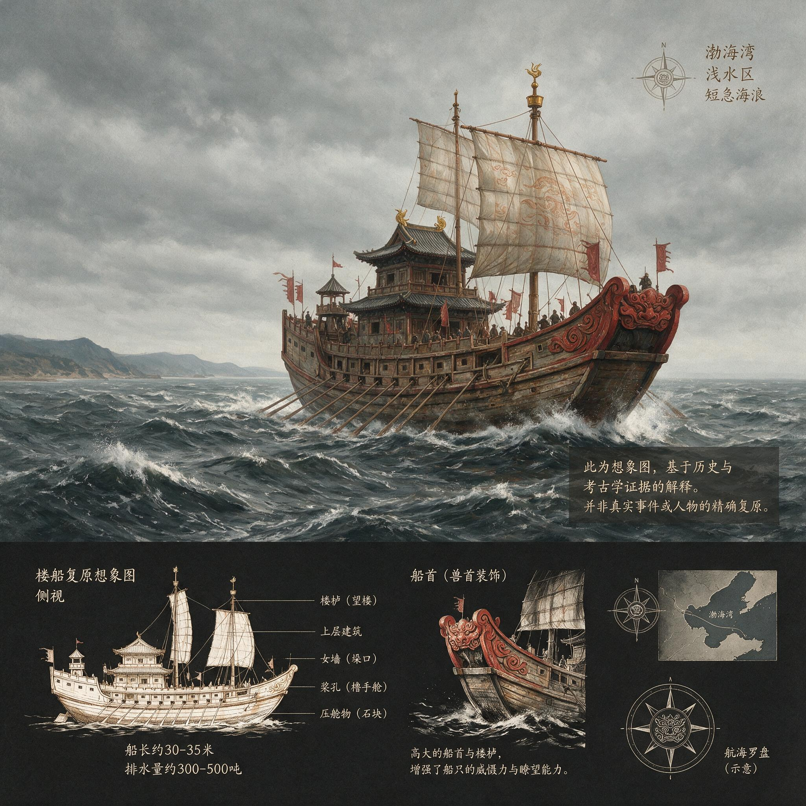

第 3 章
楼船考
渤海湾的风一起，水面不用多久就会变。这不是大洋里的涌，那种从数千公里外传来的、有节律的起伏。渤海太浅，平均水深不过十八米，风在水面拉出来的浪，短而急，一道一道之间几乎没有间隙。
一艘楼船在这样的水里，感受到的不是辽阔的摇荡，而是成千上万次没有节奏的拍击。船头一下，船尾一下，舷侧再一下，像有人从不同方向连续推搡一副巨大的木架。
如果这艘船上真有两层或三层甲板，那些叠在底舱之上的木构，那些为了多载人、为了站得高看得远而搭起来的建筑，那么每一次拍击都不会只停留在水线附近。浪打上船舷的同时，上层建筑也在晃。它在船体上方有自己的一套运动：比船壳慢半拍，比船壳大一些。
当船身向左倾，上层建筑还在向右；当船头埋进浪里，上层建筑却还没完全跟上。连接处的榫头、铁钉、木梁，在这些错动中承受着交替的拉力与压力，发出短促的、不连续的声响。这种声音在秦代文献里没有词。司马迁也不会写。他只留下两个字：楼船。
这两个字出现在《史记·秦始皇本纪》二十八年条的记叙里，是徐福第一次求仙计划中唯一涉及船只的记载。秦始皇在琅琊停留期间，齐人徐巿，也就是后来被《淮南衡山列传》写作徐福的方士，上书称海中有蓬莱、方丈、瀛洲三座神山，仙人居之，请求斋戒沐浴、携童男童女入海求药。
司马迁用了几十个字记下这件事，其中涉及船队的，只有“楼船”二字。没有数量，没有尺寸，没有载重，没有结构，没有适航性能。整支船队被压缩成一个名词。
这不是司马迁的疏忽。《史记》在不同篇章中对徐福其人有不同记述：《秦始皇本纪》写作“徐巿”，而《淮南衡山列传》则写作“徐福”，并记述了他向秦始皇描述在海上遭遇“海神”、对方索求童男童女作为见面礼的细节。
在《史记》和《汉书》所覆盖的年代里，“楼船”作为一类船只的统称反复出现，几乎总是与军事行动、帝王巡游或海上求仙联系在一起。元鼎五年汉军平南越，楼船将军杨仆所率江淮水师中即有楼船；元封二年讨朝鲜，楼船军再次出场，后来因海风与潮汐折损严重。班固在《汉书》里将徐福与韩终并列，称二人入海后音讯全无，不是遇难，而是有意逃亡。
无论哪种记载，都只见船名，不见船形。楼船有多大？能装多少人？多层甲板如何分布？底舱如何隔水？帆桅如何设置？
这些问题在传世文献里找不到答案。上一章结束的时候，少府的账册已经显露出一个结构性空位：一项投入巨大、牵涉广泛的行动，在帝国档案库中只存零散碎片，没有案卷名称，没有负总责的人。徐福可以在琅琊说出“在渤海中，去人不远”这样的目的地描述，却没有人追问方位的准确含义。那个空位是制度性的。
现在，同样的问题落到了一个更具体的物件上。整项计划中最具象征意义的实物——承载人员、物资、童男童女、弓弩手和求仙承诺的船——在全部现存案卷里只对应着两个字：楼船。这两个字不是技术描述。它是一个类别，一个用途，一个帝国语境下的通称。通称的意思在于，使用者默认对方知道自己在说什么。
司马迁在写下“楼船”二字时，不觉得有必要解释什么是楼船，就像他在写“驰道”时不会解释驰道的宽度，写“五尺道”时不会解释五尺的具体数字。楼船在秦汉之际是习见之物，习见到不需要附加描述。但正因如此，后世反而失去了理解它的入口。
我们已经不知道司马迁所见的楼船是什么形状，不知道秦代官营工场里的船工如何理解这两个字，更不知道徐福从琅琊出发时，岸边停泊的那几艘楼船，究竟在什么意义上算是“可以出海”。本章不试图回答其中任何一个具体的技术细节。因为现有材料不足以支撑那样的复原。任何声称能精确描绘徐福座舰尺寸与结构的说法，要么建立在想象上，要么建立在比附上，两者都不可靠。
本章能做的是另一件事：从目前已知的秦汉造船遗址实物证据出发，划定秦代造船能力的上限与下限。所谓上限，是帝国官营工场在理想条件下能够制造多大的船；所谓下限，是这些船在黄海渤海的具体海况中能够承受什么样的风浪。徐福的船队无论规模多大，都只能在这个区间之内。
理解这个上限，必须离开徐福活动的胶东半岛，把视线投向帝国南疆的番禺，今天的广州。1970年代在广州发现的秦汉造船工场遗址，是目前关于这一时代船舶建造最直接、也最具规模的实物证据。遗址核心是三个平行排列的造船台，由枕木、滑板和木墩构成。
木墩两两成对，嵌入地面以下，用来支撑建造中的船底；滑板铺设在木墩之上，形成一道略微倾斜的滑道，船体完成后可以借助重力沿滑道下水。这种设计表明，当时的造船工序不是在水边临时搭架，而是在固定的工场里进行成批加工。
船台本身就是一项工程。对这个遗址性质的争论在考古学界持续了很长时间。有学者认为它是造船台，也有学者主张它可能是其他类型的木构建筑基址。分歧的根源在于，出土的木构遗迹保存状况并不理想，关键部位在发掘过程中已受到相当程度的扰动。
但无论其最终定性如何，遗址中与木作加工相关的大量迹象——成排的木墩、滑道状的倾斜构造、铁制工具痕迹——所提供的尺度信息仍然有效。即便退一步，不把它作为确凿的造船台证据来使用，它至少显示了秦汉之际岭南地区大规模木构加工的能力。而对本章的论证而言，这两条路径指向同一个结论：那个时代的官营工场，具备建造大型木结构船只的工程潜力。三座船台中，保存较好的一号船台滑道宽度约一点八米，二号船台滑道宽度约二点八米。
滑道的宽度决定了船底接触面的宽度，也间接限定了船体的最大宽度。考古学者根据滑道宽度、木墩间距和船台整体尺度推算，这些船台能够承载的船体宽度大约在五到八米之间，长度可达二十到三十米。
这个尺寸意味着什么？它意味着排水量数十吨，如果结构得当、板材充足，接近百吨也不是不可想象。一艘长三十米、宽七米的木船，放在今天的港口里不算什么，但放在公元前三世纪，它已经是帝国工程能力的顶端。
这个能力的物质基础，在遗址中留下的工具痕迹里清晰可见。铁锛、铁凿、铁钉，加上木材加工留下的榫卯接口，说明当时的官营造船已经采用了铁制工具与榫接技术相结合的方式。铁钉用于固定船板与肋骨，榫卯用于连接纵向与横向构件。这种混合连接方式，比单纯用藤条或绳索绑扎船壳的早期技术要牢固得多，也比完全依赖榫卯的传统木构更适应船体在水中承受的交变应力。船在水中航行，所受的力不是静态的。每一道浪打来，船板上每一个点都在承受方向不断变化的弯折。
铁钉与榫卯并用的意义，恰恰在于它们可以在不同方向上分担这些应力：铁钉抗拔出，榫卯抗剪切。广州船台确立了一个技术基准：秦统一后的官营工场，有能力建造适合近海航行的大型木船。
但造船能力不等于适航能力。广州船台能造多大的船，是一个层面的问题；这些船能在什么样的水里航行，是另一个层面的问题。两个问题之间隔着整个帝国北方海域的具体物理条件。
徐福船队的建造地点，不在广州。他的活动区域在齐地，在今天山东半岛的沿海一带。那里的造船传统与岭南不同。胶东半岛的沿海考古表明，齐地很早就有独立的造船业，其船只形制有鲜明的区域性特征。在胶东沿海出土的一些古代船桨和船型陶器上，可以看到一种更适合北方海域的船型：船体相对窄长，长宽比大，线型较尖，有利于在风浪短促的海域里破浪前进。这种船型与广州船台的宽体船不同，与其说是为了载货，不如说是为了应对黄海和渤海那种又急又碎的水面。
齐地造船传统的形成，与这片海域的地理条件直接相关。黄海和渤海有其特殊之处。
渤海平均水深极浅，风浪的波长很短，波高虽然不大，但频率极高，对船体的持续冲击远甚于开阔海域的规则涌浪。黄海则受季节风影响显著，冬季北风强盛时，近岸浪高可以达到数米，夏季台风虽不如南海频繁，但偶有强风过境，海况变化极快。秦代船工对这片海的了解，主要来自沿岸航行积累的经验：哪里可以避风，哪里水深不足，什么季节不宜出海，什么风向适合返航。这些知识一旦离开海岸线太远，就失去了作用。
而楼船这种船型，恰恰是最不适合离开海岸线的一种。“楼”这个字的含义，在秦汉文献中从未被精确定义过，但综合军事和巡游场合的使用来看，它指的是一种在船体上方搭建多层甲板的构造。底舱之上，至少还有一层正式甲板，其上是供人员站立、瞭望和作战的空间。有些记载中提到楼船上有“楼橹”，即甲板之上的高台，用于观察远方和布置弓弩。这种设计清楚地显示，楼船的用途是近岸作战与威慑，而不是远航。它的价值在于载员多、视野好、近岸条件下可以形成高度优势。
但所有这些优势都有一个前提：船体下方的水不能太深，浪不能太大。这里需要澄清一个常见的误解。许多后来的注释家把“楼船”理解为一种固定的船舶类别，似乎秦汉时代存在一个标准化的楼船形制，有确定的层数、确定的尺度、确定的结构。这种理解在传世文献中找不到依据。
楼船不是一个标准规格，而是一种建造思路。它的核心特征是在船体之上搭建高出舷墙的建筑，用增加高度的方式来获得载员和瞭望空间。至于这个建筑是一层还是两层，是前后两座还是通长一体，不同时期、不同工场、不同用途之间会有相当大的差异。而差异本身并不改变其根本的结构逻辑：高度增加，重心升高，抗横摇能力下降。
多层甲板的重心问题，不需要造船工匠也能理解。船体出水越高，重心越高；重心越高，恢复正浮的能力越弱。近海岸边风浪较小时，这个问题不突出；但一旦进入风浪持续的外海，上层建筑受到的风压会成倍增加，船体侧倾幅度加大，恢复力矩不足以抵消横摇，甲板上的木构连接处就会承受超出设计的应力。
先出现的是变形，然后是松动，最后是断裂。如果一艘楼船在渤海湾里已经像开头描述的那样摇晃，那么到了黄海中部，到了没有任何陆地遮蔽的开阔水面上，它的境况只会更糟。
这种结构弱点在秦汉文献中并非没有印证。楼船军在作战中的失利记录，往往与水况有关。元封二年讨朝鲜，楼船军沿海路进发，中途因海风与潮汐折损严重。汉代的航海条件比秦代已经有所积累，楼船军的组织也比徐福的求仙船队更加规整，但结果仍然是船队在海况面前遭受重创。这些记载没有详细描述船只如何倾覆、如何折损，但把它们放在楼船的结构特征之下重读，逻辑是自洽的：高大的上层建筑在风浪中承受了超出设计的应力，连接处失效，进水，然后是整艘船的丧失。
南海和地中海的同时代造船路线，为这种结构选择提供了旁证。地中海的古典时代造船传统，在风帆利用和船体线型上走出了自己的路。希腊化时期的商船已经拥有较大的舱容和相对稳定的横帆系统，适合在地中海这个相对封闭、风浪有规律的水域里进行跨海运输。
但地中海的平均水深、风浪形态和航行距离都与黄海截然不同。不同的海况孕育不同的造船路线，这不是谁先进谁落后的问题，而是面对不同物理环境做出的不同选择。
秦代船工面对的黄渤海，是一个平均深度极浅、风浪急促多变、冬季风强劲的北方水域。他们造出的船，从齐地的尖底窄船到岭南的宽体楼船，都服务于同一个逻辑：沿海岸线航行，靠地标判断方位，在可避风的港湾停泊。这个逻辑里没有横渡开阔海域的位置，因为不需要。
这个技术选择背后的地理逻辑，需要展开。黄渤海在秦代航海实践中的实际航行范围，远小于今天的人所想象的那样。从琅琊出发，向北经过成山角，绕过今天的山东半岛东端，再进入渤海，这是一条成熟的沿岸航线。秦始皇东巡的路线，本身就是在沿着这条海岸线走。二十八年巡游，他从咸阳出发，经峄山、泰山，再到琅琊，然后沿山东半岛北岸向西折返。这条路线不是海上航行，但他在琅琊停留、刻石、派人入海，说明琅琊本身就是帝国面向海洋的一个节点。
而从琅琊向北、向东的海上航线，在齐地船工的世代积累中已经形成，它连接着山东半岛的各个港口，最远可以到达辽东半岛南端。再远呢？记录就开始模糊。
从山东半岛东端到朝鲜半岛西海岸，海图上是一条不算太长的线。今天的直线距离，最短处约两百公里。但在没有仪器导航的公元前三世纪，这条线的意义和今天完全不同。秦代船工判断位置，靠的是肉眼可见的陆地。在天气晴朗的白天，陆地的轮廓可以看很远，但那是针对海岸线本身。要看到海岸线之外的岛屿，或者远方的另一片陆地，需要相当高的观察点。
一艘楼船的顶楼，高出水面十到十五米，理论上在最佳能见度下可以看到三十到五十公里外的陆地。但这是理论极值。真实的航行中，海面上有雾，有霾，有低云，有阳光反射造成的眩光。更多的时候，船员们能依赖的是五十公里以内的陆地轮廓，以及某些特定的、醒目的地标：一座孤立的山，一处突出的岬角，一条大河的入海口。这些地标构成了沿岸航行的语言。
船从甲地出发，先看到某山在船头的什么方向，行半日后看到另一座山，转向，再沿某岛东侧经过，然后驶入某湾避风。这套语言只在海岸线附近有效。一旦陆地从视野中消失，一旦最后一座山、最后一个岬角沉入海平面以下，船就失去了语言。
秦代的航海知识体系里，没有为这种失去语言的状态提供任何替代方案。
他们能利用星辰判断大致方向，这在先秦文献中偶有提及；但星辰导航只能给出一个粗泛的方向感，不能给出船在茫茫大海上的精确位置，更不能给出距离陆地的远近。
从山东半岛到朝鲜半岛的二百公里直线距离，中间没有任何可以停靠的岛屿作为视觉确认点。船队如果横渡，在航程中段，船员们会处于一种完全失去陆地参照的状态。
这在沿岸航行经验的框架里，已经是一种超出了常规操作的冒险。而从山东半岛到日本列岛的距离，比这远数倍。从胶东沿海出发，横穿黄海，再进入对马海域，全程超过一千公里。这个距离，对依靠地标导航的秦代航海者来说，已经不再是“冒险”所能概括的范畴。
它意味着船队必须在一千公里的海面上，持续地承受风浪，持续地保持航向，持续地在一个没有地标的世界里做出每一个判断。而秦代楼船的每一个结构特征，都不是为了这个目的而设计的。
不是没有绕行的可能。理论上，船队可以沿中国海岸线北上，绕过辽东半岛，经朝鲜西海岸南下，再渡对马海峡。这条路线的大部分航程可以保持海岸在视野之内，比直接横渡黄海安全得多。
但这也意味着航程成倍增加，所需粮草、水源和沿途停泊点成倍增加，船体在连续航行中承受的累计应力成倍增加。而且这条路线有一个致命的前提：船队必须对朝鲜西海岸的具体情况有足够了解，知道在哪里取得补给，在哪里避风，在哪里等待季节转换。
秦代是否有这样的航海知识，目前没有材料能够证实。辽东半岛和朝鲜半岛之间的海上交通，在燕人、齐人的活动范围内或许已有一些零星的贸易往来，但这些经验是否足以支撑一支规模庞大的官方船队，是另一个问题。把楼船的结构限制放在这条可能的航线上来看，问题会更加具体。
一艘排水量数十吨至近百吨的木船，满载人员和物资后吃水加深，干舷降低，抗风浪能力进一步削弱。多层甲板上的木构在长途航行中持续承受风压，任何一次超出常规的横摇都可能造成不可逆的结构损伤。即使没有遭遇风暴，仅仅是成千上万次小幅度摇晃的累积效应，也足以让榫卯连接松动、铁钉与板材之间的咬合逐渐失效。
这种累积效应，是木船时代航海者最为熟悉却最难向局外人解释的现象。
一根木梁在受力时会发生微小的形变。当力撤去后，它会恢复原状。但如果力的方向不断变化，每变化一次，木纤维内部就留下一点点不可恢复的位移。这些位移积累到一定程度，就会变成肉眼可见的松动。榫头在榫眼里不再严丝合缝，铁钉周围的木质开始酥软，板缝间的填絮被反复压缩后失去了原有的弹性。
一艘新船下水时，每一个连接处都是紧的；航行一个月后，每一个连接处都有了自己的记忆。而这个记忆，记录的是所有的摇晃、扭转和撞击。
楼船的多层结构加剧了这种记忆的恶化速度。上层建筑在风浪中的摆动幅度，大于底舱。
连接上层建筑与船体之间的那些榫头和铁钉，因此承受着船舱内部任何其他连接处都无法比拟的交变应力。一层甲板到二层甲板之间的柱子，二层到三层的横梁，三层的楼梯和栏杆，这些部件在航行中不断地被向左右拉扯，向前后错动。
楼船在近岸水域的服役经验，往往是以天为单位的；如果跨海作战，则是在有明确航行计划和大量跟随船只的情况下进行，一旦风浪过大，船队可以整体避风。但徐福的求仙航程，没有这样的时间表，没有这样的退路，没有清楚的目的地。
这就是“能力”与“需求”之间的断裂。秦帝国集中了当时最优秀的工匠，调动了最充足的木材和铁器，在官营工场里造出了令人惊叹的船。但这些船的每一个结构选择，都和徐福的任务目标朝着不同的方向。楼船的“楼”是为了站得高看得远，但站得太高，一艘船就失去了与远方海域周旋的能力。
《史记》只用了“楼船”二字，或许不是因为司马迁对技术细节不感兴趣，而是因为在当时的人看来，楼船本来就是一个不需要解释的熟词。
五代后周的僧人义楚在《释氏六帖》中，听闻来华日僧宽辅之言后，记载了徐福东渡日本的传说，写道：“日本国亦名倭国，东海中。秦时，徐福将五百童男、五百童女，止此国也。今人物一如长安。” 但在他所处的时代，徐福所乘的“楼船”究竟是何种面貌，早已无人能说清。
他们知道那是什么样的船，知道它能做什么，不能做什么。它出现在琅琊的记载里，就像出现在南越战场和朝鲜海战中一样，都是在一个近岸环境中担任承载和威慑的角色。只有徐福的那一次，这个熟词被放进了一个完全陌生的语域：驶离海岸，驶向蓬莱。
楼船的技术边界，到此已经清晰。船能造多大，是一回事；船能开多远，又是一回事。
广州船台给出的能力上限，是长二十到三十米、宽五至八米、排水量数十至近百吨。黄渤海水域给出的环境下限，是风浪短促、海况多变、离开海岸三十到五十公里后地标导航完全失效。两相对照，结论不需要更多的文字：秦代楼船，是为海岸航行设计的船。它的抗风能力、结构耐力和导航体系，都建筑在一个不变的前提上——陆地不能从视野中消失。

而徐福的目的地，恰恰要求陆地必须从视野中消失。不仅要消失，而且要消失很久。从山东半岛到日本列岛之间的海面上，有数百公里没有任何可以辨认的陆地地标，有连续的横摇冲击，有季风带来的系统性强风，有秦代航海知识从未覆盖过的洋流和浅滩。
一艘楼船在这些条件下航行的每一刻，都在逼近它的结构极限。这种逼近不是抽象的风险，而是可以用数字勾勒的边界。
秦代楼船的设计航行条件，是根据黄渤海近岸海况制定的。近岸六级风以下，波高不超过两到三米，可以维持航行；超过这个限度，部分船只就需要避风。
而黄海南部和东海开阔海域，冬季强风期常见波高在三到五米之间，瞬时风浪可以更高。这个差距，是造船者不在场时做出的判断。他们造的船，从来不需要面对这样的水。
秦代并没有留下任何关于风级和波高的记录。这些数字是现代海洋气象学对黄海、渤海海域的观测结果。用现代数据去还原古代条件，中间横亘着许多变量。
但这不妨碍我们做出一个相对稳妥的判断：秦代船工所能依据的全部经验，都是在一个年平均波高较低、最大波高有限的内海环境中积累的。他们把船造得能够适应这个环境。
徐福的任务，却要求这些船去适应一个更广阔、更狂暴的环境。而那个环境，恰恰是当时任何人都不曾用航行经验去丈量过的。到这里，已经有足够多的理由停下来。
楼船的形制、船台的能力、齐地造船传统的区域特征、黄渤海的物理条件、地标导航的距离极限、多层结构的弱点——所有这些放在一起，构成了一条清晰的证据链。这条证据链不依赖任何想象，也不需要填补任何关键空白。它只要求我们接受一个略显平淡的结论：秦代确实能造大船，但这些大船的设计逻辑，是在海岸线附近活动。
从这个结论出发，徐福船队的命运就获得了一种超越个人意图的解释。无论徐福是真心求仙，还是从一开始就是一场骗局；无论秦始皇是出于对长生的执念，还是出于对海上世界的好奇；无论船队在出发时准备了多少粮草、带了多少弓弩手——这些变量都没有触及最根本的问题。
最根本的问题是，他们所用的船，不是为那个目的地设计的。楼船在琅琊港里可以显得高大威严，楼橹上的旗帜在岸上的人眼中可以是一种力量的象征，但它一旦驶入外海，那些让它看起来威严的特征，就会变成让它脆弱的根源。这种结构性的错位，和上一章呈现的制度性错位相呼应。
制度上，东渡计划没有案卷名称，没有负总责的人，没有清晰的责任链；技术上，东渡计划所用的船只，没有为跨越开阔海域做任何让步，没有降低重心的设计尝试，没有针对长航程的结构加固。
两种错位指向同一个事实：秦帝国在推动东渡时，没有真正把它当作一项需要专门解决方案的事业来对待。
它被拆散了。账目上是少府的一笔异常支出，行政上是琅琊郡的一桩例行差事，器物上是几艘现成的楼船。每一部分都在帝国的正常运转中看起来合理，合在一起却是一场没有任何人负总责的海上冒险。
最后，船还是船。木头还是木头。风浪还是风浪。楼船的技术边界已经划定。它们是为海岸航行设计的。当这些船装载着童男童女、粮草、弓弩手和数年之久的求仙承诺驶向外海时，它们所携带的不是神山的希望，而是结构失效的确定性。
这个确定性不是事后才出现的判断。它从船台滑道被选定的那一刻起，就已经存在于那些木头的重量、高度和位置之中。现在，船已经在岸边。它摇晃的方式，已经说明了它注定不能走远。